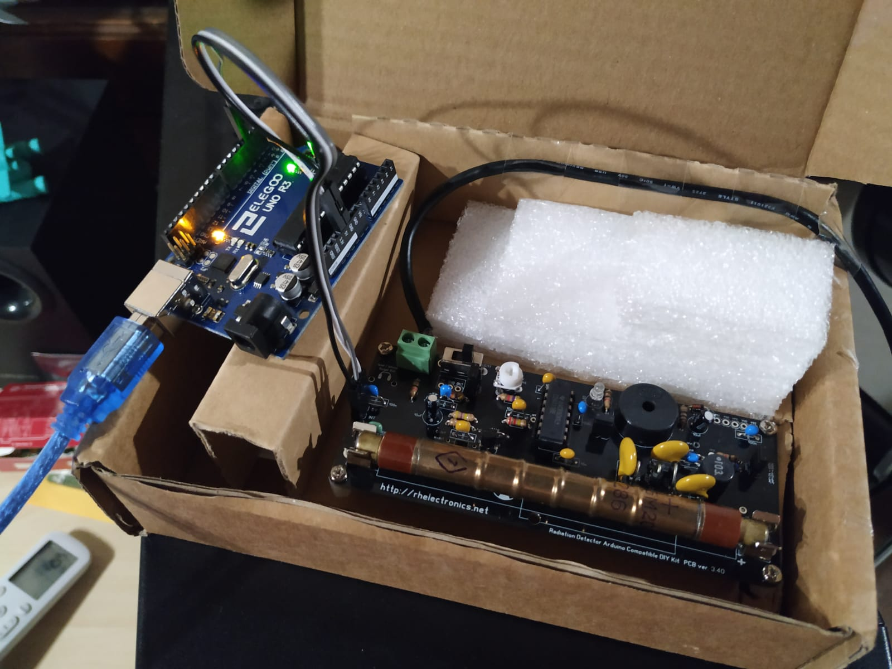

Arduino Geiger Muller Counter
I've always wanted to have my very own Geiger-Müller counter to test radioactive samples, but the price of profesional grade equipment is too high to justify the cost for a "toy". Instead, I decided to build it myself using readily available consumer parts.
The device only employs four parts: the Geiger-Müller tube driver circuit, the tube itself, the Arduino microcontroller, and a portable 5V USB battery. It features a data logging function.
THIS PAGE IS A WORK IN PROGRESS